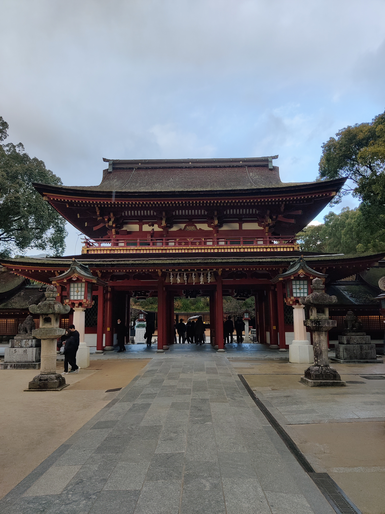
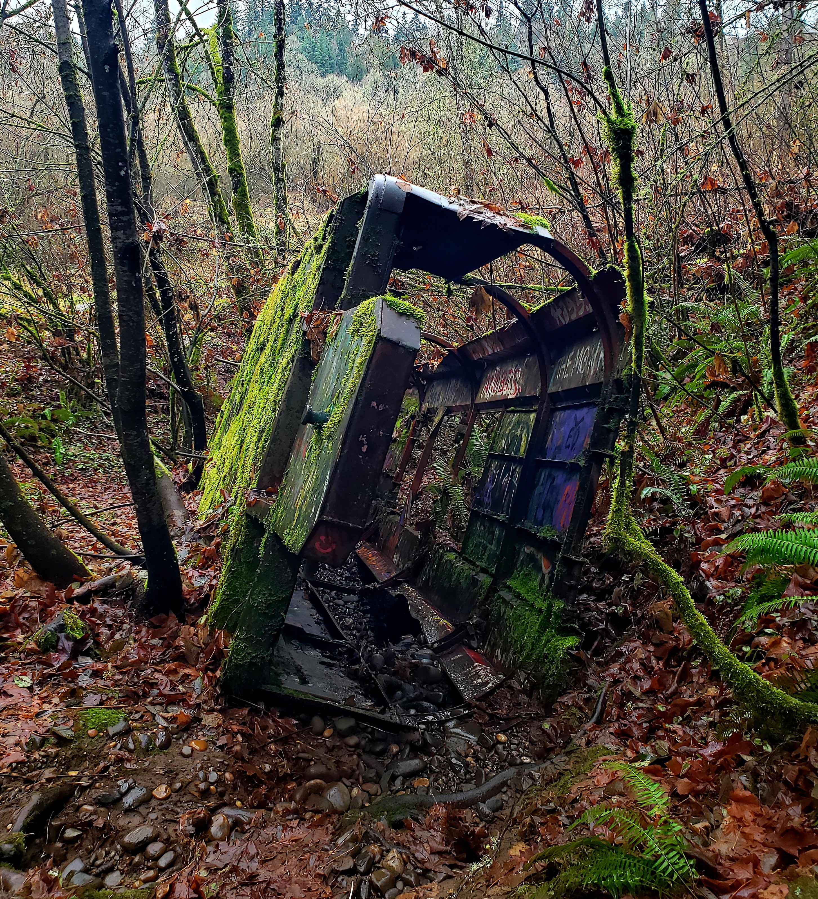
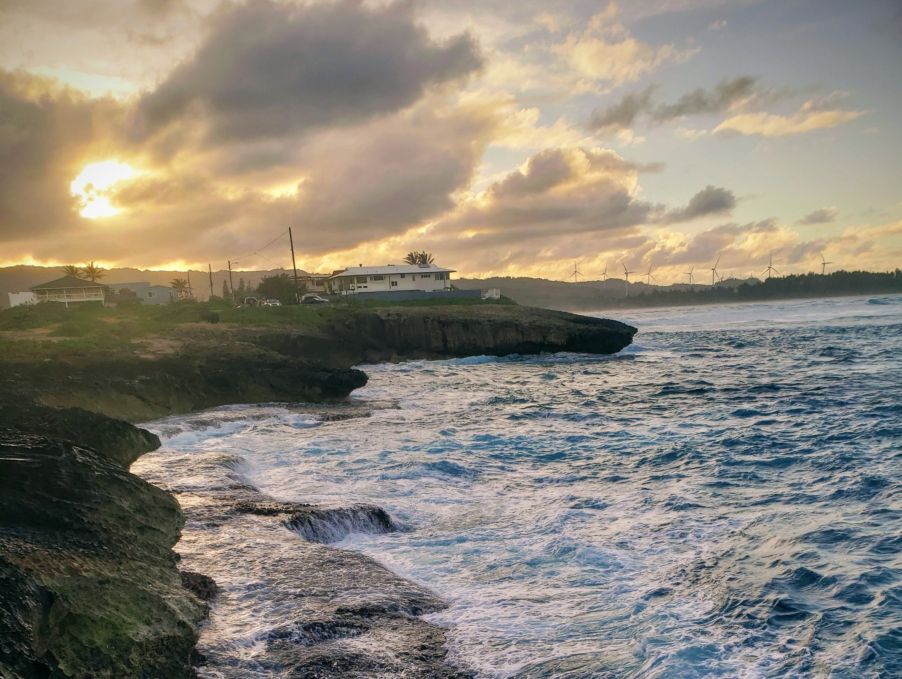
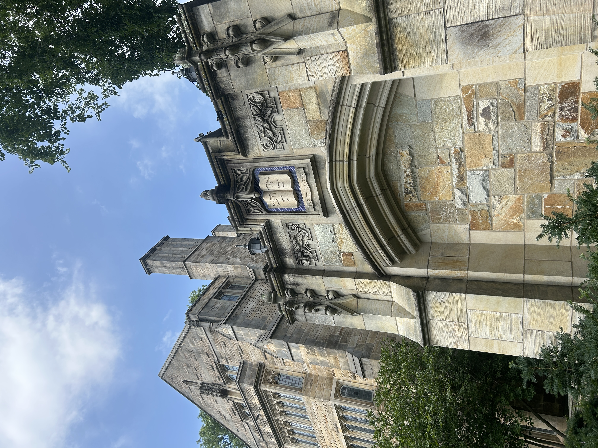
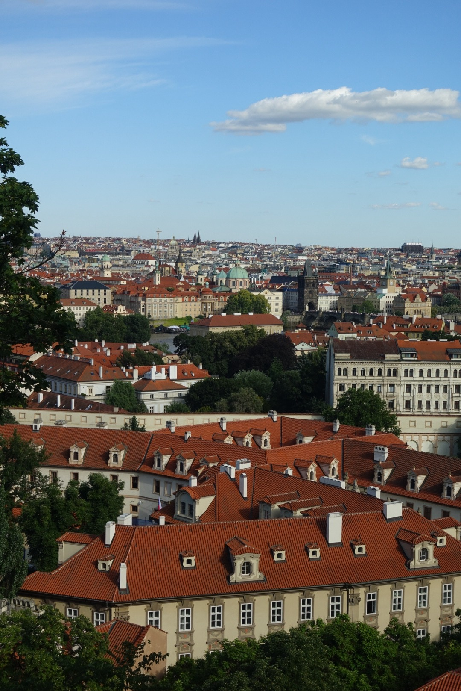
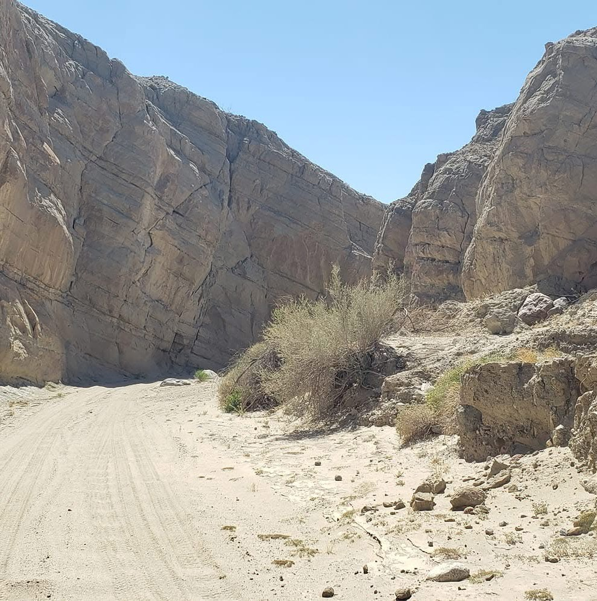

Fukuoka, Japan
My wife's home prefecture on the western side of Kyushu, the southernmost main island of Japan. Japan was the first country I visited outside my own, to meet her family and friends in the weeks before we were married and sealed together in the temple.

Vancouver, Washington
My hometown. I spent over 18 years in Vancouver, across the Columbia River from Portland, Oregon. The cold forest streams, the looming mountains, the towering evergreen trees, and the gloomy, rainy cityscape defined my childhood.

Laie, Hawaii
My current home. A small tropical beach town on the North Shore of Oahu. In Laie, I'm currently attending BYU-Hawaii, pursuing majors in Biology and Computer Science. It was here that I met my wife.

Yale University, Connecticut
I lived on the Yale University campus for about 10 weeks (2.5 months) under an NSF research program. This historic Ivy League institution challenged me and provided me with a higher outlook on my academic and personal pursuits. While here, I also visited New York City and Boston.

Prague, Czech Republic
The capital city of the Czech Republic in Central/Eastern Europe. I stayed in Prague for one week on a conference trip presenting on the discovery of four novel bacteriophages. I loved the historic architecture and great cuisine. On my final day in Europe, I also visited the neighboring countries of Germany and Poland.

Borrego Springs, California
This was my favorite area in my mission. A remote desert town in San Diego County, near the Anza-Borrego Desert State Park and the semi-abandoned town of Salton City, which lies on the shores of a dead, polluted and salty inland sea: the worst environmental disaster in California history. Despite its isolation and harsh conditions, this area was pivotal for my mission experience.